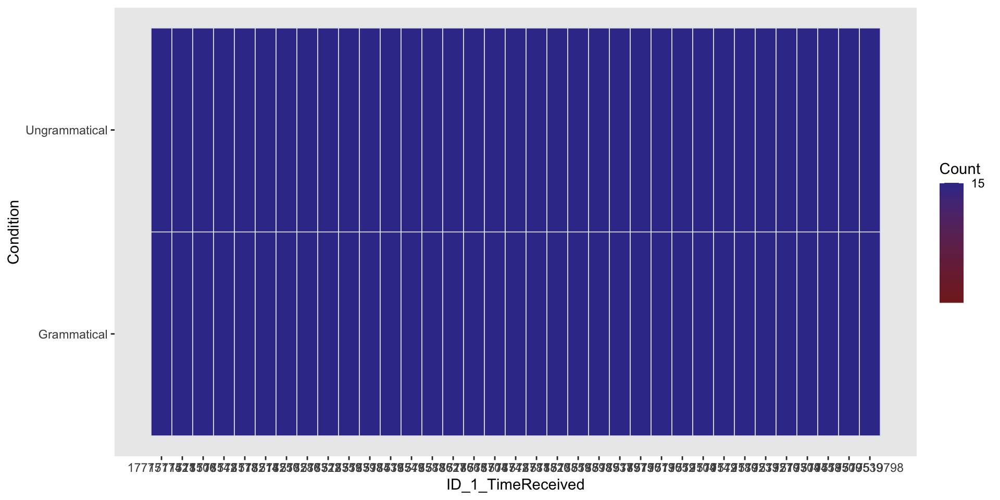
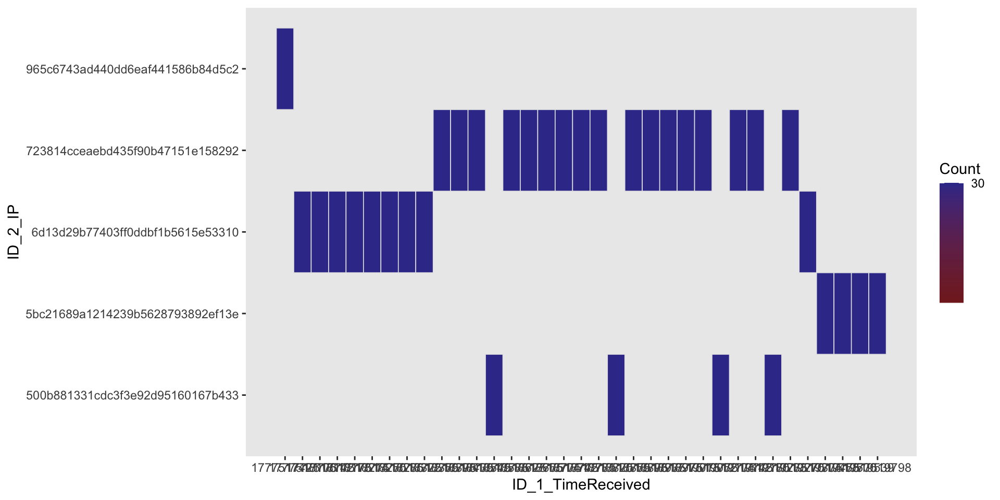
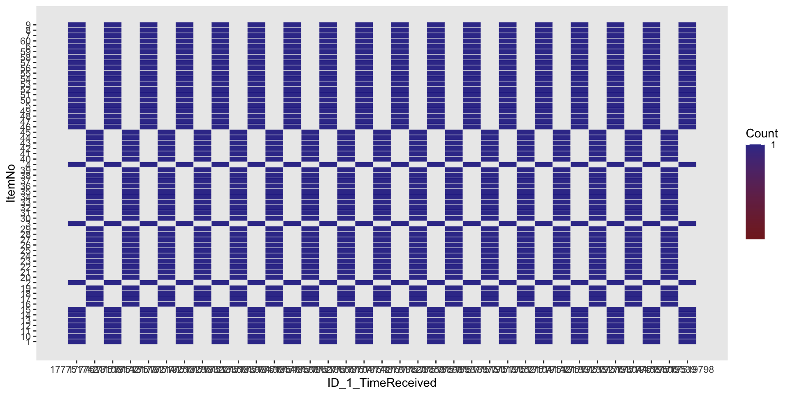
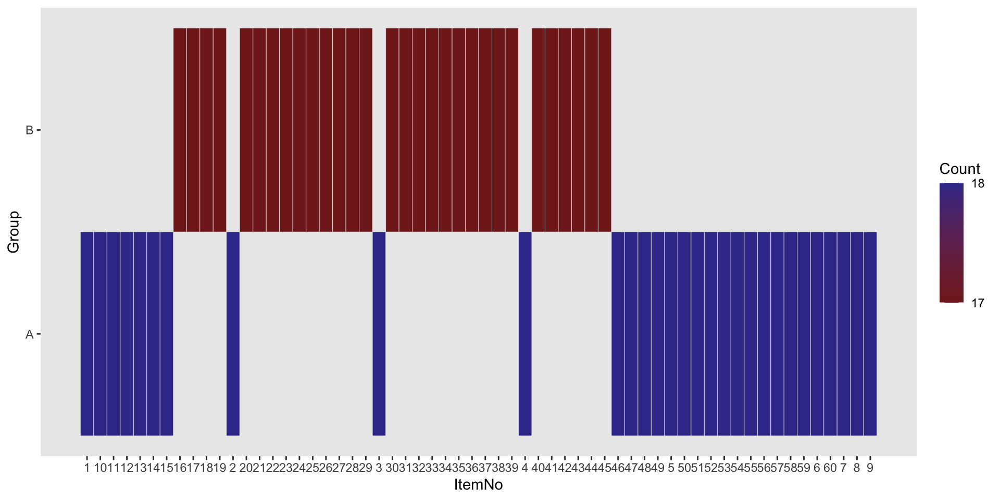
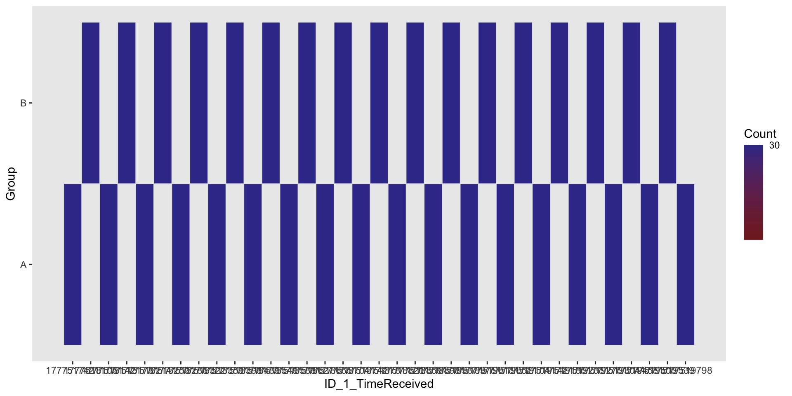

CHC9012 | National Taiwan Normal University
Prepare your computer:
✍️ Preparatory activity
We should never forget that coding is a tool to achieve a task. For our case, the main task is to prepare the dataset for further analyses, which means:
The best way is to look at the data we just imported into RStudio, and take notes about what needs to be done. I personally take physical notes on flying papers for this step.
This is what the results table looks like. Let’s have a look at its columns, 18 in this file. There are two types: (a) PCIbex’s default columns, and (b) the columns that we asked PCIbex to log.
Results.reception.time: Time in the PCIbex server when the results were received. This can be used as the Participant ID, assuming that there are no two participants who submitted the results at the exact same time.MD5.hash.of.participant.s.IP.address: Scripted IP address of the machine used by the participant.Controller.name: Which controller was used to code the experiment.Order.number.of.item: The order of presentation of the whole questionnaire, starting from the very first page.Inner.element.number: Whether specific numbers were assigned to the element.Label: The name given to the webpage in PCIbex (for example, Welcome page, Instructions, Exeriment, etc.).Latin.Square.GroupPennElementType: The PCIbex element used for the action (TextInput, Scale, Dropdown, etc.).Parameter: Breakdown of the elements used on a same page.Value: What the participant wrote or selectedm or when an element starts or ends.EventTime: Time point at which an action occured (the time corresponds to the PCIbex server)CommentsItemNo: The ID of the item (here, sentence)Condition: The experimental conditionGroupUserAgeUserDegree✍️ Preparatory activity, again
Look closely to the results file. What needs to be done?
You can find below how to use RStudio to perform the transformations listed above.
$ sign (data$Controller.name)NULL to this column to delete it.You can have a glimpse of the names of the columns using the names(...) function.
[1] "Results.reception.time"
[2] "MD5.hash.of.participant.s.IP.address"
[3] "Order.number.of.item"
[4] "Label"
[5] "PennElementType"
[6] "PennElementName"
[7] "Parameter"
[8] "Value"
[9] "EventTime"
[10] "ItemNo"
[11] "Condition"
[12] "Group"
[13] "UserAge"
[14] "UserDegree" Each name is assigned to a numerical index. For instance, “[1]” corresponds to “Results.reception.time”. We can call the name of one specific column as below.
[1] "Results.reception.time"Once we have the index of columns, we just need to assign new names to them.
[1] "ID_1_TimeReceived" "ID_2_IP" "Order.number.of.item"
[4] "Label" "PennElementType" "PennElementName"
[7] "Parameter" "Value" "EventTime"
[10] "ItemNo" "Condition" "Group"
[13] "UserAge" "UserDegree" Based on our notes, we need to filter to have only the rows where the Label is Experiment.
filter() function from the dplyr package.%>% to say that “This is the Label column from the dataset called data”.== sign means that we want the Experiment rows.We can see that there are unnecessary _Header_ rows under the Parameter column, and we would like to remove them. We can use the same logic, but notice the use of !=, meaning “we don’t want these rows”.
📖 Defining reaction time
In this experiment, Reaction time = Time when the judgment is made - Time when the sentence appeared
Calculating the reaction time from PCIbex data requires several steps.
Let’s have a look at our data:
Here, Reaction time = “EventTime when Parameter = Choice” - “EventTime when Value = Start”. So we need to select these rows first. We stored in a temporary dataset that we call RT_Prep1.
Under the Value column, we have the time for Start, but not for Choice, which is found in another column. We want to have everything under the same column. So we tell R that when in the Value column, the word is not Start, it writes Choice instead. Then, we delete columns when the two rows are different – we want to keep the differences minimal.
To do the subtraction, we want to have the EventTime for Start and Choice in different columns. We use the spread() function from the tidyr library.
Now we just have to tell R that we are dealing with numbers, and do the subtraction.
💭 Last step
We have two datasets:
data2, with the judgment data, but not the reaction time,RT_Prep2, the temporary dataset with the reaction time, but not the judgment data.We just need to join them based on their common minimal value: 1 different trial per participant.
First, we select the row where the judgment is given.
Finally, we use the left_join() function to join these two datasets based on (a) the participant ID, and (b) the Item index.
Let’s look again at our data:
'data.frame': 1050 obs. of 15 variables:
$ ID_1_TimeReceived : int 1777517421 1777517421 1777517421 1777517421 1777517421 1777517421 1777517421 1777517421 1777517421 1777517421 ...
$ ID_2_IP : chr "965c6743ad440dd6eaf441586b84d5c2" "965c6743ad440dd6eaf441586b84d5c2" "965c6743ad440dd6eaf441586b84d5c2" "965c6743ad440dd6eaf441586b84d5c2" ...
$ Order.number.of.item: int 16 33 26 25 31 7 28 17 21 34 ...
$ Label : chr "Experiment" "Experiment" "Experiment" "Experiment" ...
$ PennElementType : chr "Scale" "Scale" "Scale" "Scale" ...
$ PennElementName : chr "Scale" "Scale" "Scale" "Scale" ...
$ Parameter : chr "Choice" "Choice" "Choice" "Choice" ...
$ Value : chr "6" "1" "4" "3" ...
$ EventTime : num 1.78e+12 1.78e+12 1.78e+12 1.78e+12 1.78e+12 ...
$ ItemNo : chr "11" "58" "51" "50" ...
$ Condition : chr "Grammatical" "Ungrammatical" "Ungrammatical" "Ungrammatical" ...
$ Group : chr "A" "A" "A" "A" ...
$ UserAge : int 30 30 30 30 30 30 30 30 30 30 ...
$ UserDegree : chr "Ph.D." "Ph.D." "Ph.D." "Ph.D." ...
$ RT : num 20079 13763 13247 13997 13063 ...Some variables correspond to groups (or categories), so we used the as.factor() function to group them.
Some are just numerical value, and so we use the as.numeric() function.
Now this is our data:
'data.frame': 1050 obs. of 15 variables:
$ ID_1_TimeReceived : Factor w/ 35 levels "1777517421","1777518106",..: 1 1 1 1 1 1 1 1 1 1 ...
$ ID_2_IP : Factor w/ 5 levels "500b881331cdc3f3e92d95160167b433",..: 5 5 5 5 5 5 5 5 5 5 ...
$ Order.number.of.item: num 16 33 26 25 31 7 28 17 21 34 ...
$ Label : chr "Experiment" "Experiment" "Experiment" "Experiment" ...
$ PennElementType : chr "Scale" "Scale" "Scale" "Scale" ...
$ PennElementName : chr "Scale" "Scale" "Scale" "Scale" ...
$ Parameter : chr "Choice" "Choice" "Choice" "Choice" ...
$ Value : num 6 1 4 3 2 6 1 7 1 1 ...
$ EventTime : num 1.78e+12 1.78e+12 1.78e+12 1.78e+12 1.78e+12 ...
$ ItemNo : Factor w/ 60 levels "1","10","11",..: 3 54 47 46 52 12 49 4 41 55 ...
$ Condition : Factor w/ 2 levels "Grammatical",..: 1 2 2 2 2 1 2 1 2 2 ...
$ Group : Factor w/ 2 levels "A","B": 1 1 1 1 1 1 1 1 1 1 ...
$ UserAge : num 30 30 30 30 30 30 30 30 30 30 ...
$ UserDegree : Factor w/ 4 levels "BA","High school",..: 4 4 4 4 4 4 4 4 4 4 ...
$ RT : num 20079 13763 13247 13997 13063 ...We made use of some columns when calculating the reaction time, but we do not need them anymore, and they are redudant. So here is another round of column removal!
'data.frame': 1050 obs. of 15 variables:
$ ID_1_TimeReceived : Factor w/ 35 levels "1777517421","1777518106",..: 1 1 1 1 1 1 1 1 1 1 ...
$ ID_2_IP : Factor w/ 5 levels "500b881331cdc3f3e92d95160167b433",..: 5 5 5 5 5 5 5 5 5 5 ...
$ Order.number.of.item: num 16 33 26 25 31 7 28 17 21 34 ...
$ Label : chr "Experiment" "Experiment" "Experiment" "Experiment" ...
$ PennElementType : chr "Scale" "Scale" "Scale" "Scale" ...
$ PennElementName : chr "Scale" "Scale" "Scale" "Scale" ...
$ Parameter : chr "Choice" "Choice" "Choice" "Choice" ...
$ Value : num 6 1 4 3 2 6 1 7 1 1 ...
$ EventTime : num 1.78e+12 1.78e+12 1.78e+12 1.78e+12 1.78e+12 ...
$ ItemNo : Factor w/ 60 levels "1","10","11",..: 3 54 47 46 52 12 49 4 41 55 ...
$ Condition : Factor w/ 2 levels "Grammatical",..: 1 2 2 2 2 1 2 1 2 2 ...
$ Group : Factor w/ 2 levels "A","B": 1 1 1 1 1 1 1 1 1 1 ...
$ UserAge : num 30 30 30 30 30 30 30 30 30 30 ...
$ UserDegree : Factor w/ 4 levels "BA","High school",..: 4 4 4 4 4 4 4 4 4 4 ...
$ RT : num 20079 13763 13247 13997 13063 ...'data.frame': 1050 obs. of 10 variables:
$ ID_1_TimeReceived : Factor w/ 35 levels "1777517421","1777518106",..: 1 1 1 1 1 1 1 1 1 1 ...
$ ID_2_IP : Factor w/ 5 levels "500b881331cdc3f3e92d95160167b433",..: 5 5 5 5 5 5 5 5 5 5 ...
$ Order.number.of.item: num 16 33 26 25 31 7 28 17 21 34 ...
$ Value : num 6 1 4 3 2 6 1 7 1 1 ...
$ ItemNo : Factor w/ 60 levels "1","10","11",..: 3 54 47 46 52 12 49 4 41 55 ...
$ Condition : Factor w/ 2 levels "Grammatical",..: 1 2 2 2 2 1 2 1 2 2 ...
$ Group : Factor w/ 2 levels "A","B": 1 1 1 1 1 1 1 1 1 1 ...
$ UserAge : num 30 30 30 30 30 30 30 30 30 30 ...
$ UserDegree : Factor w/ 4 levels "BA","High school",..: 4 4 4 4 4 4 4 4 4 4 ...
$ RT : num 20079 13763 13247 13997 13063 ...Finally, we realized that even if we have enough information for each trial to conduct further analyses, we do not know what sentence they correspond to. This is surely because we forgot to .log() them in the PCIbex script. But we can repair this mistake:
left_join() function as previously to join these two datasets based on the index of the items (here, ItemNo)'data.frame': 1050 obs. of 11 variables:
$ ID_1_TimeReceived : Factor w/ 35 levels "1777517421","1777518106",..: 1 1 1 1 1 1 1 1 1 1 ...
$ ID_2_IP : Factor w/ 5 levels "500b881331cdc3f3e92d95160167b433",..: 5 5 5 5 5 5 5 5 5 5 ...
$ Order.number.of.item: num 16 33 26 25 31 7 28 17 21 34 ...
$ Value : num 6 1 4 3 2 6 1 7 1 1 ...
$ ItemNo : Factor w/ 60 levels "1","10","11",..: 3 54 47 46 52 12 49 4 41 55 ...
$ Condition : Factor w/ 2 levels "Grammatical",..: 1 2 2 2 2 1 2 1 2 2 ...
$ Group : Factor w/ 2 levels "A","B": 1 1 1 1 1 1 1 1 1 1 ...
$ UserAge : num 30 30 30 30 30 30 30 30 30 30 ...
$ UserDegree : Factor w/ 4 levels "BA","High school",..: 4 4 4 4 4 4 4 4 4 4 ...
$ RT : num 20079 13763 13247 13997 13063 ...
$ Sentence : Factor w/ 60 levels "He does not need help with his homework today",..: 23 47 17 46 42 11 38 50 22 28 ...💭 Checking process
We want to make sure that we did not corrupt our data when arranging them for further analyses. Otherwise, we can run further analyses and have results, but they will have no value!
We will mostly use the ezDesign() function from the ez package.





📝 Assignment for next week
Please annotate the Markdown file from this week, knit to a PDF file, and upload on Moodle!